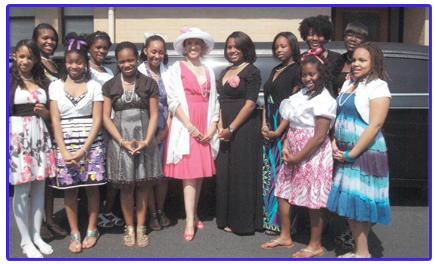

Judge Penny Brown Reynolds Foundation, Inc.
A 501(c) (3) Non-profit Corporation
Mission Statement:
The Judge Penny Brown Reynolds Foundation, Inc. is dedicated to the restorationand promotion of the family through education, advocacy and service.
Judge Penny’s Vision on Service
“There are a number of people who specialize in criticizing the problems in our communities instead of doing something about them. They expect everyone from our President, to elected officials, to the government, to be a savior. We must teach the next generation to stop making excuses and come together and create a change in our communities. This foundation represents my vision to change the lives of people. Everyone can make a difference right where they are. Change can come one person at a time. It takes commitment, passion and a desire to give of your time in order to solve the problems of today. We all have the ability to make a difference. The question is – do we care enough to do so.”Judge Penny Brown Reynolds
Foundation Programs Include:
- Girls in P.E.A.R.L.S. (Girls who are Positive, Excellent, Anointed, Respectful, Leaders, Spiritual) A Mentoring Program for girls 12-18 years of age.
- Back to School Enrichment Program
- Leadership Summer Camp
- Family & Parenting workshops
- Women & Men’s health forums
- Bullying and domestic violence prevention among teenagers and adults
- Entrepreneurial development seminars
- Financial workshops
- Drug awareness and prevention program
- HIV/AIDS education
- Women’s Self –Esteem workshops